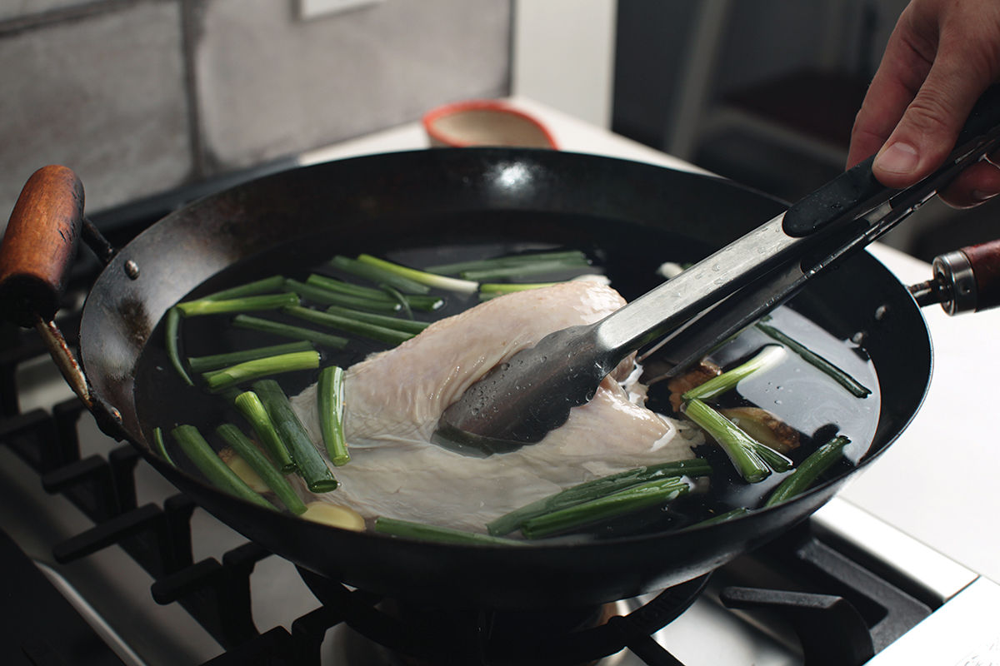
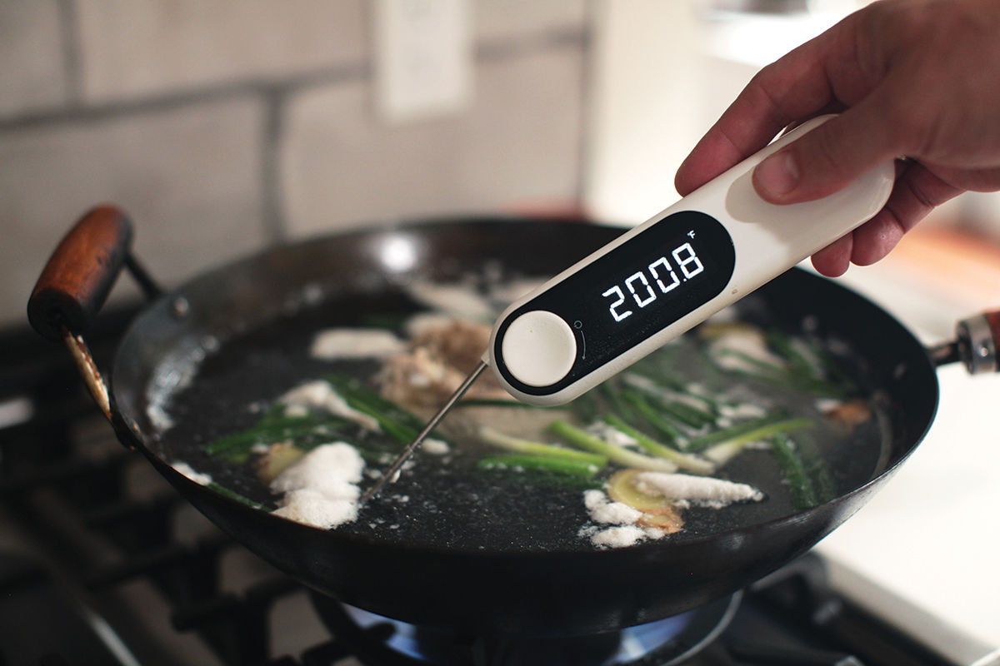
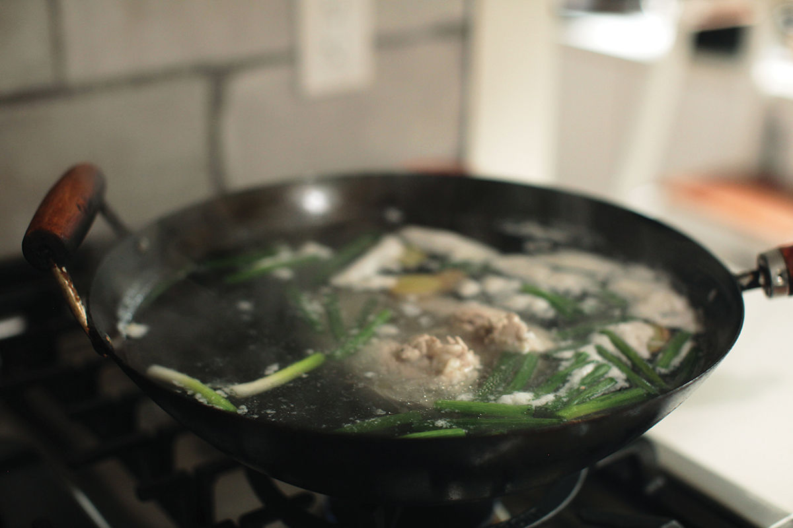
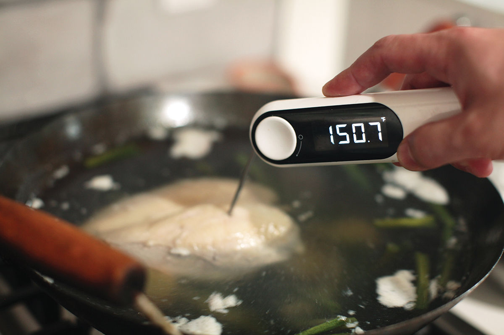
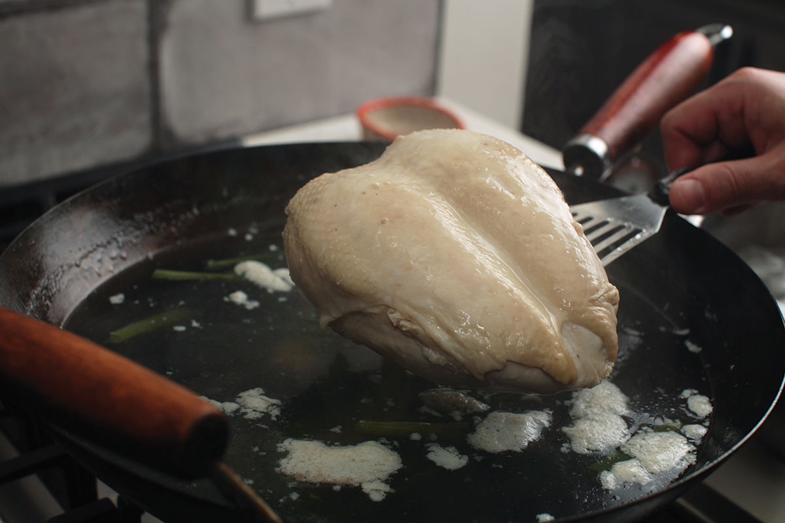
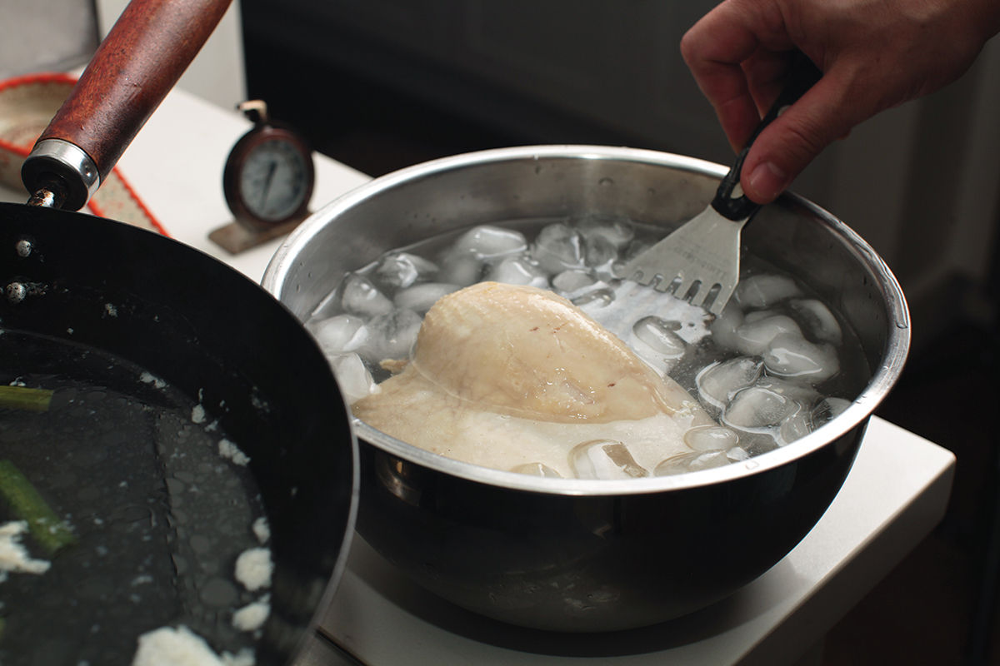

PERFECTLY POACHED CHICKEN BREASTS






|
Yield Makes 4 poached chicken breast halves |
Active Time 15 minutes Total Time 40 to 60 minutes |
INGREDIENTS
2 whole bone-in, skin-on chicken breasts or 4 breast halves, 1 to 1½ pounds (450 to 675 g) total
6 scallions, very roughly chopped
4 coin-sized slices (about ½ ounce/15 g) fresh ginger
3 quarts (3 l) cold water
DIRECTIONS
1 Combine the chicken, scallions, ginger, and water in a wok. Place over high heat and heat until the liquid is barely simmering, using tongs to turn the chicken over and around a few times as it heats. The liquid should register around 200°F (94°C) on an instant-read thermometer.
2 When the liquid is barely simmering, reduce heat to the lowest setting and cover with a lid. Meanwhile, set up a large bowl with a few cups of ice and a couple of quarts of cold water.
3 Check on the chicken every few minutes with the thermometer and remove it from the poaching liquid when the thickest part of the largest piece registers 150°F (65°C), about 25 minutes. Transfer the chicken to the ice bath and let chill for 15 minutes. The chicken is now ready to be carved and served or incorporated into a difference recipe.